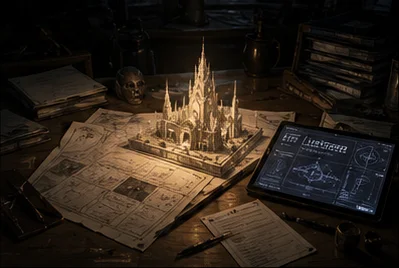
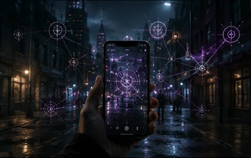
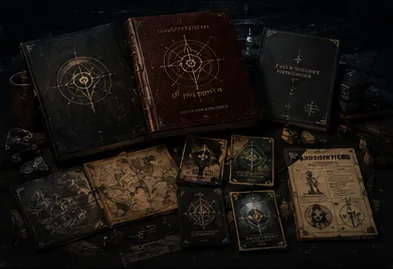

Cradlepoint Studio
One universe.
Multiple ways in.
An independent studio building connected fiction, tabletop systems, software, and location-based interactive experiences.
Choose a doorway
What brings you here?

Funding + partnershipsFund the next verified layer.
Guided funding and partnership case: problem, beachhead, revenue sequence, use of funds, and founder advantage.
Open the Funding Case →
Technology + Mobile ARExplore the platform direction.
VeilDaemon, location-based encounters, and scalable software.
Explore the Platform →
PublishingBring the tabletop line forward.
Professional production, crowdfunding, distribution, and licensing.
Explore Publishing → Projects + releases
Projects + releasesSee what already exists.
Live products, Needlepoints, fiction, software, and work in development.
View Current Work → Studio storyWhy this studio exists.
Read the Studio Story → Press + mediaApproved materials and imagery.
Open the Press Room →Selected work
Built, shipping, and becoming.
View all projects →Current priority
What the studio is building toward now.
Near-term engine: professional tabletop publishing. Upside: VeilDaemon events and Mobile AR on that audience.
Review the evidence.
Open-web summaries and rounded metrics. Full diligence stays private until you request access.
Enter the Data Room →ContactStart a serious conversation.
Funding, publishing, technology, press, production, and venue partnerships.
Contact J. Donavon Love →